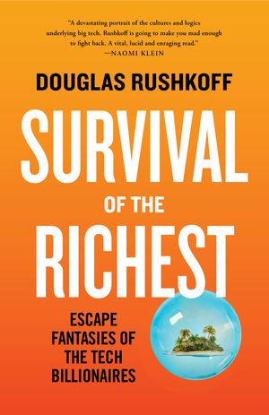
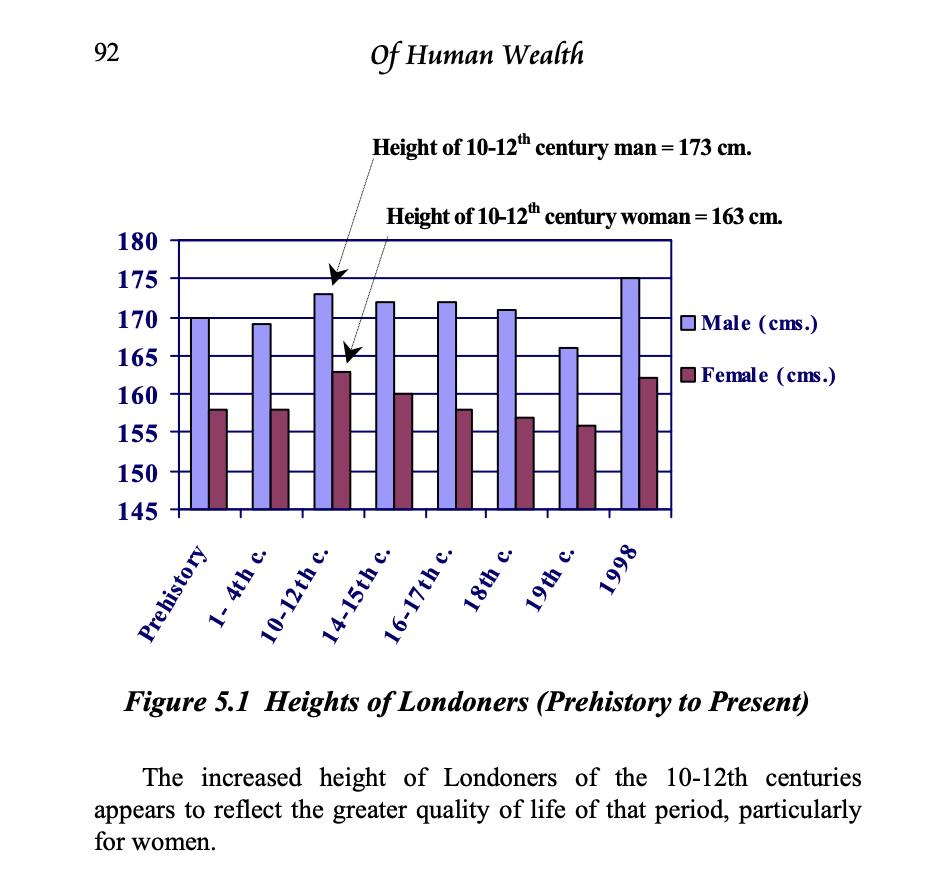
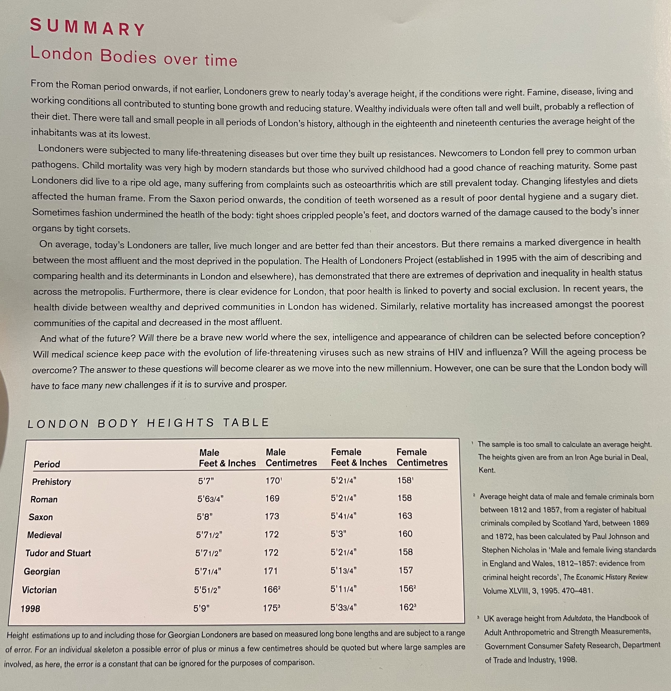

(Audio) Survival of the Richest, by Rushkoff
Sunday May 19, 2024
Billionaire bunkers are just Rushkoff's hook. His gripe is with capitalist growth as both cause and effect of the rich, and (he argues) cause of social and environmental calamities past and future. Rushkoff's book argues for degrowth.
I really like Rushkoff in some respects. I wish his Team Human podcast would make really nice basketball jerseys and sweatshirts. (I consider myself on Team Human quite independent of whatever Rushkoff says; I think it's a nice idea.)
I don't think escapism is unique to the ultra-rich. Every time I put on headphones, in some ways I'm trying to find safety in isolation. Not only the wealthy are preppers. Everyone could do well to reflect on how interdependent we all really are.
There's a bit of a failure of imagination in not exploring in the direction of Atlas Shrugged. Perhaps a Marxist can't imagine the proletariat being replaced by technology. I still think that in the near term "There will continue to be more real problems with not having enough people to work than there are with having too many people put out of work by technology," but there are big questions about what's going to happen with all the people not working conventional jobs (of which there are many already today).
I don't think Rushkoff has a good argument here. But he says so many things that the book is quite though-provoking regardless. He characterizes QAnon as a kind of internet addiction. And you get to hear about the many parties he's been invited to. Lucky you.

He [Richard Dawkins] couldn’t acknowledge that his own commitment to scientism is based on something passional—something more like faith in an empiricist universe. In other words, his insistence on living in an evidence-only universe isn’t based on evidence at all. It’s an assumption. It’s part of a system of meaning, developed by a community of people over time. It just happens to be a meaning system that ignores meaning itself. Worse, by rejecting the validity of any other meaning system, it is prone to instilling in its adherents a sense of superiority over others. Those who strive for meaning are mere “moralists.” (page 34)
I agree with parts of this critique; science should recognize its foundation and scope.
A rather long tangent on a strange claim
Initially the market economy, introduced just after the Crusades in the late Middle Ages, benefited the former peasants of feudalism. This was a lateral, peer-to-peer economy, not a hierarchical one. Local farmers and bakers didn’t generally aspire to be “rich” so much as to sustain themselves. Their currencies were optimized for trade; they were less a way of saving or hoarding money than facilitating the exchange of goods between people. It worked so well that Europe saw its greatest period of economic growth to this day—measured in the prosperity of the common folk. Towns got so wealthy that they invested in building cathedrals to spur future pilgrimages and tourism. People worked less, ate more, and grew taller than ever before—and in some cases, ever since. (page 40)
I don't think this is the dominant historical view, but this time does seem to be Rushkoff's "make economics great again" period. It's a rather bold claim, saying that everybody used to be better off, and even taller than now!
The citation here is the unpublished (but available online) Of Human Wealth. The authors (Lietar and Belgin) call the period 1050-1290 "the first European renaissance." On page 92 they have this graph in classic Excel style:

On page 91, the "ever since" is explained:
In a study of the skeletons of bodies in the same geographical area (the City of London), informative findings emerged. The women of the 10-12th century were on average taller than in any other period in recorded history, at least in London. During that period, the average female Londoner was a whopping 7 centimeters taller than her counterpart in Victorian times and 1 centimeter taller than the average woman of London today! (Of Human Wealth, page 91)
The source for all this is London Bodies, the book companion to a 1998 exhibit at the Museum of London. The graph in Of Human Wealth seems to be based on a table on the last page:

It isn't clear that this is an authoritative source for drawing conclusions about trends in height over time. It also isn't clear that the table is even consistent with the rest of its own book, and further it seems that Of Human Wealth is rather abusing what there is in London Bodies anyway.
The "Saxon" numbers seem to correspond to page 56, in the "Saxon Bodies" chapter:
From this period, the eleventh and twelfth centuries, comes our best group of medieval skeletons from a parish churchyard in London. Excavations between 1975 and 1979 at the cemetery of St Nicholas Shambles on Newgate Street produced over 200 burials. The average heights of the people buried in the cemetery were 173cm (5ft 8in.) for men and 157cm (5ft 2in.) for women. (London Bodies, page 56)
Here the value for men matches the table, but the number for women is quite different. Indeed nowhere in the "Saxon Bodies" chapter does the 163cm number appear.
Regardless of whether the number in the table is a typo or not, there are many reasons to be skeptical. People buried at a particular church are not at all guaranteed to be a random sample of the population. Then there's the different methods for the heights: the first six periods use long bone lengths, while the last two use height records. The Victorian period is particularly suspect because it's based exclusively on heights of "habitual criminals," not known to be the most well-nourished of a given population. The mapping that the authors of Of Human Wealth do from London Body's period labels to centuries is also not quite right but hardly even worth mentioning compared to everything else.
I'm sure I don't know enough about history to provide a complete evaluation of this whole "first European renaissance" theory, but from what I can see it doesn't seem very convincing. I'm surprised Rushkoff would even mention it, and the fact he does makes me more skeptical of everything else he says.